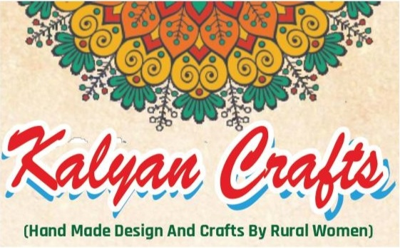
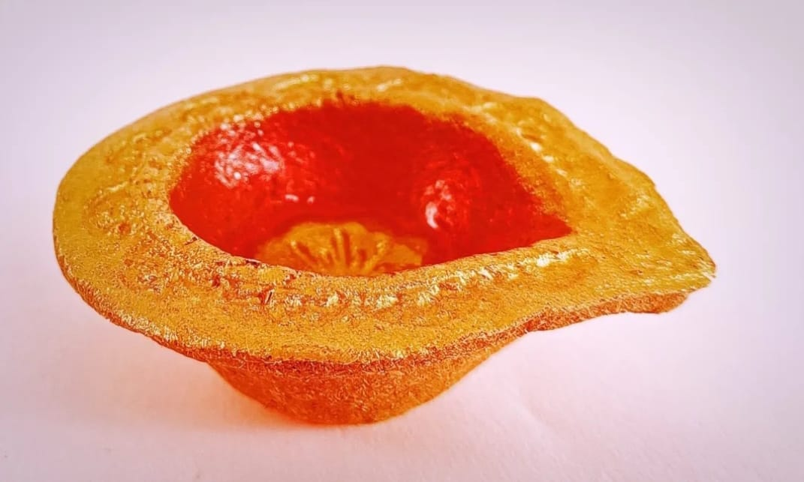
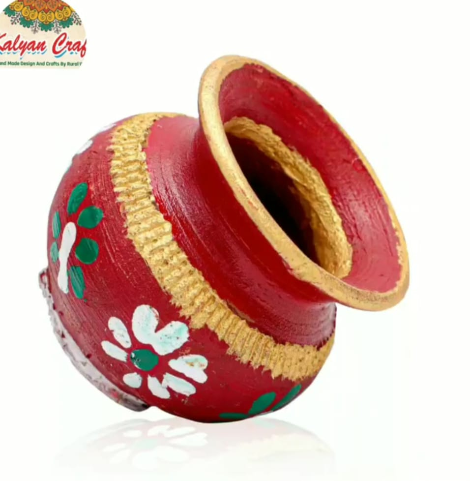
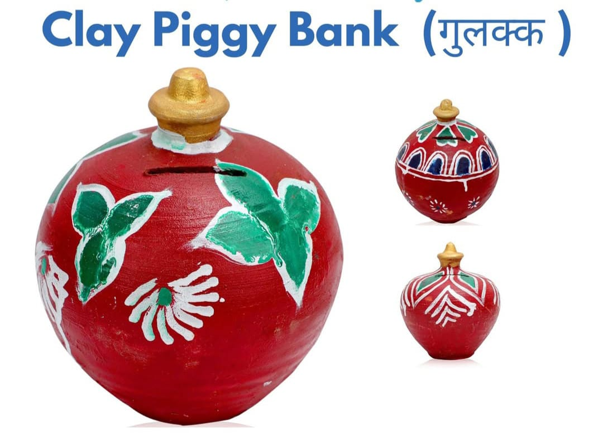

Handmade Eco-Friendly Handicraft Products
Kalyan Crafts was established as an initiative of Samajik Yuva Sangthan Sansthan (SYSS) which works for women empowerment and rural livelihood development. The aim is to provide rural women with skill training and sustainable income opportunities.
This initiative is supported by Shree Balram Go Sewa Sadan, God Ka Bas Gaushala where women are trained to create eco-friendly cow dung based products along with handicrafts.

Eco-friendly cow dung diya.

Beautiful handmade kalash.

Handmade eco piggy bank.
Every rural woman should become empowered, respected and self-reliant through her own skills and creativity.
The demand for eco-friendly handicraft products is increasing in India.
Kalyan Crafts offers handmade products like diyas, wooden items and eco-friendly crafts.
Products can also be sold on platforms like Amazon and Flipkart.
Products are promoted through social media and exhibitions.
The aim is to increase sales and provide income to rural women artisans.
📞 +91 8769473594 , 7568454185
📧 kalyancraftsjaipur@gmail.com
📍 202, Opposite Boochra Hospital, Bassi, Jaipur, Rajasthan – 303301
📱 Facebook / Instagram : kalyancraftsjaipur